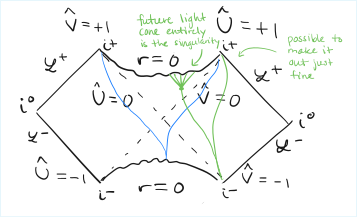

Top Five Ideas from Every Class
May 2025
Every end marks a beginning, as the trees sway and are rooted.
MEng
- Never say new or novel. Don't say extensively or thoroughly. Be understated, honest, and modest. As Professor Isola says it, quoting Game of Thrones, "A man who must say 'I am the king' is no true king." Instead, hunt the slightest lie in the written word. Imbue every sentence with strict truth. Then modest claims will assume stature beyond the clamor of the famous CEOs.
- Obsession produces invention. A 100 hour week before a deadline, and 60 hour weeks leading up to it, are often sufficient ingredients for inventing something exciting. And while inventing, there are two research modes: the lone diver with a flashlight, and the inspector of hundreds of variations who looks for trends. Both are valuable, but the inspector may lack creativity while the diver may be led astray by flukes. To work together, let the diver invent while the inspector confirms. These are the art and science of discovery.
- Write early, write often. Do not write only to record, but write for a gradient signal about what to study next. Write about claims others will challenge. Like metal, good ideas temper under pressure.
- A reader who glances only at the figures should be able to understand a paper. Therefore, the figures should tell a story. Figures become powerful when the caption is fully self-contained. Tell the reader the context and what to take away. Concretely, captions should typically run at least 3 sentences long.
- The Lipschitz constant of a neural network affects its adversarial robustness and may impact low-precision performance. Enforcing small weight norms, combined with architecture changes, allows transformers to perform competitively with activations that never exceed around 100. Muon's fixed-norm weight update enables constraining the weight norm with more methods than spectral normalization, including spectral soft cap.
"What are the chances the way people are currently training things is actually the best way?"
- Jeremy Bernstein
"When heaven is about to confer a great responsibility on any man, it will exercise his mind with suffering, subject his sinews and bones to hard work, expose his body to hunger, put him to poverty, place obstacles in the paths of his deeds, so as to stimulate his mind, harden his nature, and improve wherever he is incompetent."
- Meng Tzu (fourth century BCE), from Chapter 1 of Coddling of the American Mind, sent to me by Andrii Zahorodnii the night before the NeurIPS and thesis deadline.
21T.101 Introduction to Acting
- Take risks. The audience will feel the thrill more, on stage or well beyond it.
- Move close to another person as a tool for improvisation. It hands the cards to your partner.
- Listen. You will find every cue, all depth, the forward energy, and the nuance to make your next move in your partner. You do not need to drive the action all on your own.
- Stage combat! One person punches a little too far away to land, and the other person is in charge of selling it for the audience. One person grabs another's hair, and the grabbed person leads the way. One person kicks the air while slapping their side, and the other person yelps while rolling away. Push up on the shoulders in exasperation or to escalate.
- Spectacle adds the magic. The underwear thrown out from behind the curtain, or the flame of a lighter casting orange hue on to the drug addict's face—these moments are yours to manufacture in research, business, politics, or any endeavor you care about.
"Limón, limón! And now gran león! Arms wide, stick your tongue out!" - Professor Rubio, daily warmup
"Okay, we're not going to do crazy cat today." - Professor Rubio, to everyone's relief
8.962 General Relativity

- General relativity is a rank-2 tensor theory of gravity, meaning it uses second derivatives and enforces covariance: every law must look the same under changes in coordinates. It is the minimal classical theory that describes gravity well. Unlike special relativity, the fundamental dynamical quantity in general relativity is the metric tensor $g_{ab}$, which encodes geometry. A smooth manifold and metric tensor together comprise a spacetime. While there are higher derivative theories of gravity, Einstein's is the simplest nontrivial one that recovers Newton's gravity, explains the precession of Mercury, and has made successful predictions since 1916. It is not a final theory, however, due to quantum effects.
- The fifty-year-old black hole information paradox considers an entangled pair of particles, one of which is thrown into a black hole. Once the black hole evaporates, the pure state becomes mixed. But unitary time evolution from quantum mechanics bars such a change. Must information somehow travel along a spacelike trajectory to escape the black hole? Professor Engelhardt promptly received tenure for showing how this can happen. As such, effective field theory has a new regime that it does not describe. We have never seen such information because to parse it would require a quantum computer with at least $e^{1/(\hbar G)}$ gates... which is a lot. The frightening corollary of this resolution is that if the universe is compact then the wavefunction's Hilbert space is 1-dimensional. We are not supposed to learn global facts from local observations. This new paradox might guide modern research. Upshot: take your professors out to dinner with friends, and learn the secrets of the universe!
- Now for a path back to grasping general relativity. To review special relativity in a single sentence, flat Minkowski space admits 4-vector velocities with translations, rotations, and Lorentz boosts as symmetries. Now, on to geometry. Flatness is gone. Let the covariance roll. Geometry is described by the metric tensor, written $g_{ab}$ or $ds^2 = g_{ab} dx^a dx^b$, for instance $ds^2 = -dt^2 + dx^2 + dy^2 + dz^2$ for Minkowski space. Tensors are objects that transform covariantly—they satisfy the equivalence principle that a choice of coordinates should not alter the physics. Index notation tracks how many vectors and covectors a given tensor maps into a number. For example, a matrix is a rank $(1, 1)$ tensor because it maps one vector and one co-vector (or row vector) into a number, as in $u^T M v$. Einstein summation notation sums over shared indices. Contracting with the metric tensor $g_{ab}$ or its inverse $g^{ab}$ allows raising or lowering indices. Vectors are differential operators, $\nabla_v = v^\mu \partial_\mu$. Covectors are maps from vectors to numbers. Unlike our intuition, the universe is not a vector space. Two vectors cannot be added unless they are rooted at the same point. All tensors live at a point on the manifold. Parallel transport is required to connect vectors at different points. Abstract index notation allows describing tensors as objects-unto-themselves, rather than requiring coordinates. One way to define the covariant derivative of a tensor $T$ at a point $p$ is to enter locally inertial coordinates at $p$, compute $\partial_\mu T$, and define $\nabla_\mu T$ to be the tensor that transforms correctly. In other coordinates systems, the Christoffel symbol—which alone is not a tensor—fills the gap as $\nabla_\alpha V^\beta = \partial_\alpha V^\beta + \gamma_{\alpha \rho}^\beta V^\rho$ at every point $p$. The covariant derivative can also be defined as the unique derivative operator with the following properties: it matches partial derivatives for scalars, expands like the product rule, satisfies linearity, and commutes across tensor contraction; usually metric compatibility $\nabla_c g_{ab} = 0$ is also chosen for convenience. Geodesics are freely falling frames. A curve $U$ is a geodesic if it never accelerates in the direction it is traveling in, written $U^a \nabla_a U^b = 0$ at every point $p$ along its trajectory. For example, a circular orbit and a freefall toward Earth are geodesics; both feel weightless. We are in a constant state of anomaly when the ground rejects us from our natural inward geodesic. To integrate covariantly, insert the square root of the metric determinant, written $g = \det(g_{ab})$, into the volume element. For example, the sourceless Maxwell action is $S_{EM} = -\frac{1}{4} \int d^{d+1} x \sqrt{-g} F_{ab} F^{ab}$, where $F_{ab} = \partial_a A_b - \partial_b A_a$ for $A$ the vector potential. Parentheses denote symmetric additions, $T_{(ab)} = \frac{1}{2} (T_{ab} + T_{ba})$, while square brackets denote antisymmetric additions, $T_{[ab]} = \frac{1}{2} (T_{ab} - T_{ba})$. The failure of covariant derivatives to commute is recorded by the Riemann tensor, $\nabla_{[a} \nabla_{b]} V^c = R^c_{dab} V^d$. All coordinate-independent curvature information lives in the Riemann tensor. For example, the Riemann tensor for flat spacetime is $0$. The Riemann tensor's properties include $R_{abcd} = -R_{abdc}$ (negative sign from swapping inside pair), $R_{abcd} = R_{cdab}$ (can swap the two pairs), $R_{abcd} + R_{adbc} + R_{acdb} = 0$ (cyclic identity), and $\nabla_e R_{abcd} + \nabla_c R_{abde} + \nabla_d R_{abec}$ (Bianchi identity). The Ricci tensor is $R_{ac} = R_{abc}^b$. Einstein's tensor is $G_{ab} = R_{ab} - \frac{1}{2} R g_{ab}$. Einstein's equation is $G_{ab} + \Lambda g_{ab} = 8\pi G T_{ab}$, where $G$ is Newton's gravitational constant and $T_{ab} = \frac{2}{\sqrt{-g}} \frac{\delta S_{matter}}{\delta g^{ab}}$ is the stress-energy tensor. The stress-energy tensor encodes $T_{00}$ as energy density, $T_{ii}$ as pressure. It is a little bit confusing, but Professor Engelhardt's advice is to work through an example with an action for one particle, then two particles, and build up intuition. It is an open question why the cosmological constant $\Lambda \sim 10^{-122} l_p^2$ is so small compared to the natural scale for its units, $1/[\text{length}]^2$. Einstein's equation leads to equations of motion to evolve the metric over time, but says nothing about topology, which matters for causal structure. One useful computational trick is $\frac{1}{\det(M)} \delta \det(M) = \text{tr}(M^{-1} \delta M)$. Another is integrating by parts when using the calculus of variations, then ignoring the boundary term. The metric is called Lorentzian if it has one time direction (negative signature) and Riemannian if it has no time direction (all positive signature).
- The Schwarzschild black hole solution benefited from the extraordinary luck of its inventor's last name, which means "black shield" in German. It is famous for its simplicity and its accurate description of our lives on Earth. An important tool for Schwarzschild is to exploit spherical symmetry, enabled by Killing vector fields. A Killing vector field $\xi_a$ is one that satisfies $\nabla_a \xi_b + \nabla_b \xi_a = 0$. In other words, the metric $g_{ab}$ is invariant under the diffeomorphism generated by $\xi_a$, that is, following $\xi_a$ a small step at every point. When the metric has a Killing vector field, it means there is a symmetry. For example, if the time translation vector $(\partial_t)^a$ is a Killing vector, then energy is conserved. "What?" you might ask indignantly. "How is energy not always conserved?" It is because spacetime geometry does not always admit time invariance. Two examples are de Sitter and Anti de Sitter space, which are maximally symmetric spacetimes with positive and negative cosmological constants—Minkowski space has zero curvature, by contrast. De Sitter expands faster than light, or concretely a null geodesic can only travel finite distance in infinite time. Anti de Sitter space is the opposite: shining a light ray outward, the light will reach infinity in finite time and then bounce back. Schwarzschild is spherically symmetric, not maximally symmetric. Birkhoff's theorem says there is a unique spherically symmetric solution of the vacuum Einstein equation ($\Lambda = 0$): the Schwarzschild metric $ds^2 = (1 - r_s/r) dt^2 + dr^2 / (1 - r_s/r) + r^2 d\Omega^2$, for some constant $r_s$. The radius $r = r_s$ turns out to only be a coordinate singularity, which can be patched by switching coordinates. The coordinate singularity is akin to Rindler coordinates, which represent no fundamental singularity by breaking down at $x=t$. Next is the build-up to conformal diagrams, which provide a way for theorists to draw pretty pictures that are also useful. A conformal map preserves causal structure by multiplying the metric by a positive scalar function: null geodesics remain null geodesics. A conformal map that compactifies spacetime into a finite region leads to a conformal diagram, a picture that captures all causal structure. The conformal diagram of extended Schwarzschild is depicted in Figure 1. The singularities are drawn in wiggly lines. Geodesics at the singularity are non-future-extendable. The coordinates for the diagram are Kruskal coordinates. To define these, let $r_\ast = \int dr / (1 - 2M/r) = r + 2M \ln(| 1 - r/2M |)$, known as Tortoise coordinates or Regge-Wheeler coordinates. Let $u = t - r_\ast$ and $v = t + r_\ast$. Let $U = -\exp(-u/4M)$ and $V = \exp(v/4M)$. Then the conformally compactified coordinates are $\hat{U} = \tanh(U) \in [-1, 1]$ and $\hat{V} = \tanh(V) \in [-1, 1]$. The upshot is the hyperbolic tangent is a friendly tool for packing infinity into a finite diagram. Null geodesics are preserved, but distances are warped arbitrary amounts. On the diagram, the point $i^+$ refers to $+\infty$ in space and time; the point $i^-$ refers to $-\infty$ in space and time. The calligraphic L is spelled "scri" and pronounced "scry." The dashed lines are $r = 2M$, the regions outside are $r > 2M$, and the regions inside are $r < 2M$. Remarkably, you cannot always know that you have passed through an event horizon. If a spherical shell of light is fired inward such that upon convergence a large black hole will form, then you may be inside the event horizon of this black hole before you have any indication that light is on its way. Two myths about black holes: at the center of a black hole there is a singularity; and, at the horizon, space and time flip. For the first myth: there is no center of a black hole. It is more like how, moving forwards in time, one cannot avoid colliding with next Tuesday. Similarly, one cannot avoid colliding with the singularity. For the second myth: the correct way to say it is, "at the Schwarzschild horizon, the roles of the $r$ and $t$ coordinates flip." The reason is, while $(\partial_r)^a$ is timelike for $r < 2M$ (inside the black hole), $r$ is a different coordinate in this patch; the two patches can be smoothly linked by an analytical continuation, but that continuation is nonphysical.
- Causal structure theory studies the topology of causation without relying on Einstein's equation. The culmination from class was Raychaudhuri's equation, the Penrose singularity theorem, and Hawking's area theorem. Buckle up for the structure of our universe. Now, for a torrent of definitions! A curve is causal if it is timelike or null. The chronological future $I^+(p)$ of a point $p$ is the set of all points $q$ that can be reached from $p$ by a future-directed timelike curve. The causal future $J^+(p)$ is the set of points reachable from $p$ by a future-directed causal curve. The past-directed equivalents are $I^-(p)$ and $J^-(p)$. The boundary of the future is $\partial I^+(p) = \partial J^+(p)$. Composition is allowed: if $x$ is in $J^+(p)$ and $q$ is in $I^+(x)$, then $q$ is in $I^+(p)$. Two points are chronally separated if there exists a timelike curve between them. Similar for causally separated. For every point $p$ there is an open set called a convex normal neighborhood $U$ around $p$ such that every $q$ in $U$ is connected to $p$ by a geodesic entirely inside of $U$. A caustic is a set of points in which two distinct null geodesics from the same point intersect. The study of caustics is called catastrophe theory. Two points $p$ and $q$ are said to be conjugate points if two geodesics fired from $p$ can reconverge at $q$. If a point is excised from the spacetime topology, trivial failures arise such as non-future-extendable geodesics with finite affine parameter. Strong causality requires no almost closed causal curves (CCCs), which are causal curves that can return within any desired $\epsilon$ to their beginning. To exclude unphysical spacetimes, we usually require global hyperbolicity, which is strong causality together with requiring that $J^-(p)$ intersected with $J^+(q)$ be compact (no excisions). The future domain of dependence $D^+(\Sigma)$ of an achronal set $\Sigma$ is all points $p$ such that all past-directed causal curves from $p$ intersect $\Sigma$. In other words, $\Sigma$ contains a complete cross-section of the past of $p$. The past domain of dependence $D^-(\Sigma)$ is the opposite: all $p$ such that all future-directed causal curves from $p$ intersect $\Sigma$. The domain of dependence $D(\Sigma)$ is the union of these two. A Cauchy surface on a manifold $M$ is an achronal set $\Sigma$ such that $D(\Sigma) = M$. In other words, a Cauchy surface encodes all the initial data required to time evolve classical general relativity. Given a Cauchy surface, spacetime decomposes into $M = \R \times \Sigma$ (an exfoliation of spatial slices along time). A landmark theorem proves that a spacetime $M$ is globally hyperbolic if and only if it has a Cauchy surface. Now let's work towards studying light. A congruence of geodesics through a set $O$ is a set of geodesics such that for every $p$ in $O$ there is exactly one geodesic that passes through it. The deformation tensor of a congruence with tangent vector field $u^a$ satisfying $u^a u_b = 1$ is $B_{ab} = \nabla_a u_b$. Define a new metric called $h_{ab} = g_{ab} + u_a u_b$. The expansion or convergence of light rays is measured by $\theta = h^{ab} B_{ab}$, because $\theta$ also equals $d \ln(V) / d\tau$, the change over proper time of the log volume occupied locally by a congruence of geodesics. The twist is measured by $\omega_{ab} = B_{[ab]}$, which we typically assume is $0$, and let $\sigma_{ab} = B_{(ab)} - \theta / (d - 1) h_{ab}$, where $d$ is dimension. The cornerstone of causality theory is the Raychaudhuri equation, $d\theta / d\tau = -\theta^2 / (d - 1) - \sigma_{ab} \sigma^{ab} + \omega_{ab} \omega^{ab} - R_{ab} u^a u^b$. If we assume Einstein's equation and the strong energy condition, then $R_{ab} u^a u^b$ is nonnegative which makes all the signs of $d\theta / d\tau$ negative: hence gravity pulls things together! The null Raychaudhuri equation $d\theta / d\tau = -\theta^2 / (d - 1) - \sigma^2 + \omega^2 - R_{ab} k^a k^b$, for $k^a$ the tangent vector to a null geodesic $k^a k_a = 0$, must assume only Einstein's equation, the null curvature condition $R_{kk} \geq 0$, and $\omega^2 = 0$ to prove the focusing theorem. The focusing theorem says, if $\theta < 0$ at any point, then $\theta$ will tend to $-\infty$ in a finite affine parameter $\lambda \leq (d-2) / |\theta_0|$. In other words, minimal assumptions imply that negative convergence of null geodesics anywhere triggers the entire universe to collapse! A trapped surface is a compact, boundary-free, smooth, achronal, $(d - 2)$-dimensional set with two linearly independent vectors orthogonal to it, called $l^a$ and $k^a$, such that $\theta_l < 0$ and $\theta_k < 0$ everywhere on $T$. In other words, light rays inside a trapped surface always contract inwards. The crowning consequence of the null Raychaudhuri equation is the Penrose singularity theorem: if $(M, g_{ab})$ is a connected, globally hyperbolic spacetime containing a noncompact Cauchy slice $\Sigma$ and a trapped surface $T$, then assuming the null curvature condition the spacetime is null geodesically incomplete; in particular, at least one geodesic fired from $T$ is future-incomplete. In other words, a trapped surface (intuitively, the interior of a black hole) implies the existence of a singularity. To define terms more precisely in our swan song, a black hole is a region $B \subset M$ such that $B$ intersected with $J^-(i^+)$, the causal past of infinity, is empty. An event horizon is the boundary of a maximal such set. The Hawking area theorem concludes that if $(M, g)$ is a globally hyperbolic spacetime satisfying the null curvature condition then for any Cauchy slices $\Sigma_1, \Sigma_2$ such that $\Sigma_1 \subset I^-(\Sigma)$, and for any event horizon $H^+$, $\text{Area}(H^+ \cap \Sigma_2) \geq \text{Area}(H^+ \cap \Sigma_1)$. Or in other words, black holes only grow; the area of its event horizon never decreases over time. That is, until quantum effects violate the null curvature condition. In that regime, Hawking is famous for proving that black holes shrink and evaporate. This realization led to a violation of unitarity, precipitating the black hole information paradox. Physicists including Professor Engelhardt unexpectedly solved the paradox in 2022.
"How many of you have been lied to that the gradient is a vector?" - Professor Engelhardt
"I'm allergic to coordinates." - Professor Engelhardt